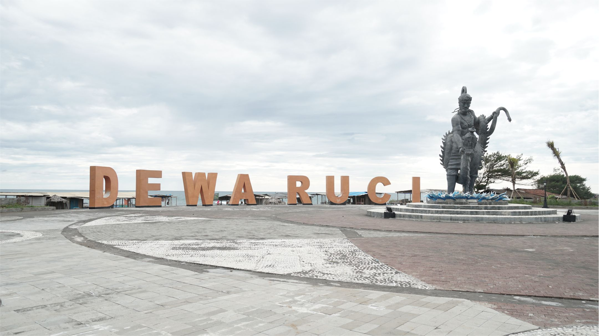
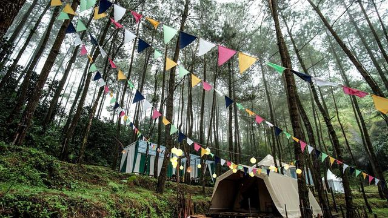
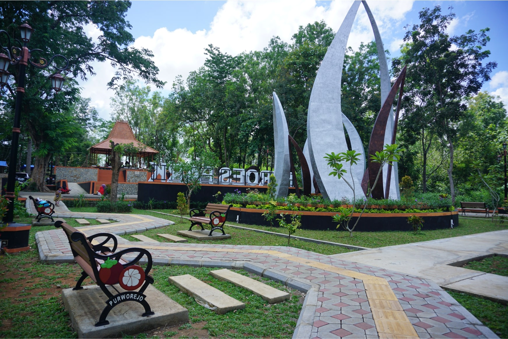

Pantai Dewa Ruci
Pantai ini berlokasi di Desa Jatimalang, Kecamatan Purwodadi, Kabupaten Purworejo, Jawa Tengah. Pantai ini memiliki ikon sebuah patung Dewa Ruci setinggi 6 meter yang berdiri di bibir pantai dan dibangun pada 2018. Kehadiran ikon ini menjadi daya tarik tersendiri bagi para pengunjung. Sementara untuk akses dari Pusat Kota Purworejo ke Pantai Dewa Ruci ini berjarak 20 kilometer. Jarak pantai Jatimalang dari New Yogyakarta International Airport hanya sekitar 5 km. Pengunjung yang datang ke Pantai Dewa Ruci Jatimalang bisa menikmati panorama pantai sembari duduk-duduk santai di gubuk yang ada di sekitar lokasi wisata.
Deloano
Deloano Glamping merupakan salah satu destinasi terbaik di Purworejo yang terletak di Desa Sedayu, Kecamatan Loano, Kabupaten Purworejo. Akses ke Deloano Glamping sangat mudah. Destinasi ini merupakan salah satu destinasi wisata yang mengusung konsep nomadic tourism yang cocok bagi wisatawan milenial. Sensasi camping seru dan nyaman dengan fasilitas dan pelayanan bintang lima, spot foto kekinian, fasilitas menarik di kawasan ini seperti fine dining restaurant, outdoor theater, glamp camping, tracking, tower of view, down hill dan fasilitas lainnya. Deloano Glamping adalah rekomendasi terbaik untuk liburan bersama keluarga dan teman-teman.
HeroesPark
Punthuk selama ini diidentikkan sebagai tempat perkemahan favorit bagi sekolah, terutama dalam hal kegiatan siswa di bidang Pramuka. Termasuk sebagai lokasi perlombaan Partai Siaga baik di tingkat Kabupaten Purworejo maupun provinsi yang merupakan simbol supremasi kepramukaan di tingkat lokal dan daerah. Ikon itu telah melekat padanya selama beberapa dekade. Terletak di Desa Kedungsari, Kecamatan Purworejo, di ketinggian bukit yang menjorok di jalur Sungai Bogowonto, Punthuk menjadi magnet tersendiri. Kini pesona Punthuk semakin bertambah sejak direnovasi menjadi Youth Center Camping Ground Arga Putra atau Taman Pahlawan